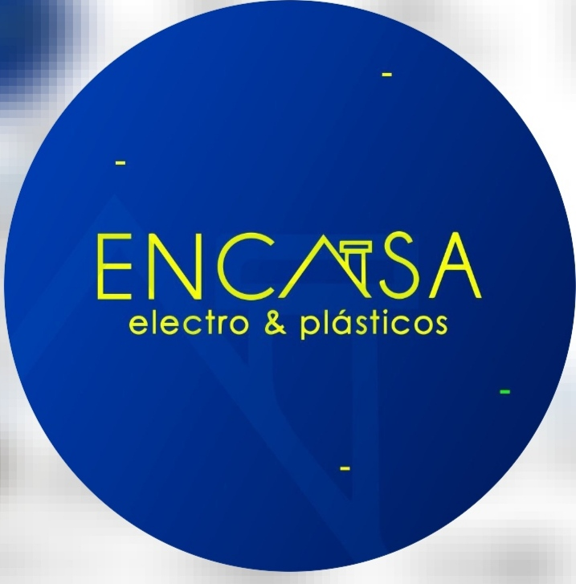

Ana María Martínez Pérez

Experiencia
Tengo experiencia en administración, manejo de personal y conocimientos básicos en contabilidad gracias a mi tiempo como dueña de una empresa en Colombia. Además, cursé tres semestres de ingeniería agropecuaria, lo que me ayudó a desarrollar un pensamiento crítico y habilidades analíticas. Actualmente, trabajo como mesera, lo cual me ha permitido seguir desarrollando habilidades interpersonales y ofrecer un excelente servicio al cliente. Me considero una persona de aprendizaje rápido, con muchas ganas de avanzar y adaptarme a nuevos desafíos.